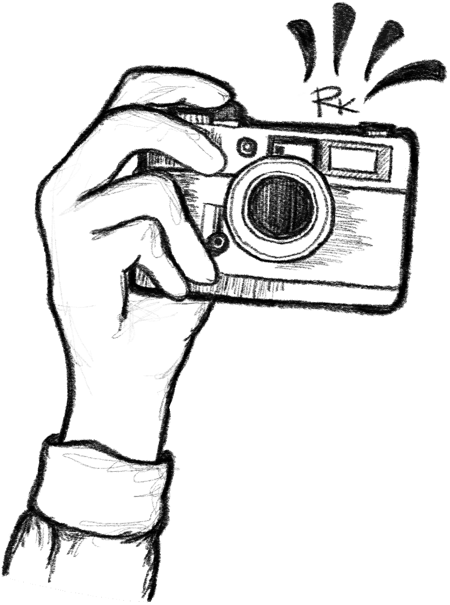

MOMENTS
A Digital Recollection by Rachel Kim
Hi there! I'm Rachel, and what you see before you are memories that are close to my heart.
A photograph can capture more than just an image. It holds within its frame a moment in time
that can evoke a flood of emotions and memories. Each image is a portal to a different world,
a window into a moment that has passed. These memories are a treasured part of who I am, and
through this website, I hope to share them with you. I believe that by cherishing and celebrating
our memories, we are also celebrating the journey of life itself, with all its ups and downs,
twists and turns. So come along with me and let's embark on a journey down memory lane, where
each photograph is a whisper from the past, inviting us to relive those moments once again.